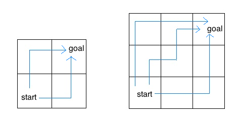

By the end of this lab, you should have submitted the lab03
assignment using the command submit lab03.
This lab is due by 11:59pm on 07/03/2014.
Here is a lab03.py starter file for this lab.
A recursive function is a function that calls itself in its body, either directly or indirectly. Recursive functions have two important components:
Let's look at the canonical example, factorial:
def factorial(n):
if n == 0:
return 1
return n * factorial(n - 1)We know by its definition that 0! is 1. So we choose n = 0 as our
base case. The recursive step also follows from the definition of
factorial, i.e. n! = n * (n-1)!.
The next few questions in lab will have you writing recursive functions. Here are some general tips:
The following examples of recursive functions show some examples of common recursion mistakes. Fix them so that they work as intended.
def sum_every_number(n):
"""Return the sum of every natural number up to n, inclusive.
>>> sum_every_number(5)
15
"""
if n == 1:
return 0
else:
return n + sum_every_number(n - 1)The base case is incorrect. If we call sum_every_number(1), the
answer should be 1, not 0.
def sum_every_number(n):
if n == 1:
return 1
else:
return n + sum_every_number(n - 1)We could also change our base case to be when n is 0:
def sum_every_number(n):
if n == 0:
return 0
else:
return n + sum_every_number(n - 1)def sum_every_other_number(n):
"""Return the sum of every other natural number
up to n, inclusive.
>>> sum_every_other_number(8)
20
>>> sum_every_other_number(9)
25
"""
if n == 0:
return 0
else:
return n + sum_every_other_number(n - 2)Consider what happens when we choose an odd number for n.
sum_every_other_number(3) will return 3 + sum_every_other_number(1).
sum_every_other_number(1) will return 1 + sum_every_other_number(-1).
You may see the problem now. Since we are decreasing n by two at a
time, we've completed missed our base case of n == 0, and we will end
up recursing indefinitely. We need to add another base case to make sure
this doesn't happen.
def sum_every_other_number(n):
if n == 0:
return 0
elif n == 1:
return 1
else:
return n + sum_every_other_number(n - 2)def fibonacci(n):
"""Return the nth fibonacci number.
>>> fibonacci(11)
89
"""
if n == 0:
return 0
elif n == 1:
return 1
else:
fibonacci(n - 1) + fibonacci(n - 2)The result of the recursive calls is not returned.
def fibonacci(n):
if n == 0:
return 0
elif n == 1:
return 1
else:
return fibonacci(n - 1) + fibonacci(n - 2)def print_up_to(n):
"""Print every natural number up to n, inclusive.
>>> print_up_to(5)
1
2
3
4
5
"""
i = 1
if i > n:
return
else:
print(i)
i += 1
print_up_to(n)When we first call print_up_to, we set a counter variable i to 1. After we
increment the counter, when we recurse and call print_up_to again, in the
frame of the recursive call we actually create a new counter variable set to 1.
We are therefore not actually reducing toward the base case i == n. In
order to keep track of information between recursive calls we need to pass the information as arguments to functions. Therefore, to solve this problem, we will use a helper function that we define so that we can choose which arguments to use.
def print_up_to(n):
def helper(i):
print(i)
if i < n:
helper(i + 1)
helper(1)Note that in our helper function, we don't have a condition laid out as the base case as we normally do. The base case is implicit because we have the condition i < n under which we execute the recursive call, and we will stop recursing once i == n and we violate this condition.
Write map, which takes a one argument function and a list as
arguments, and returns a list of the results produced by applying the
procedure to each element in the list.
def map(f, lst):
"""Returns a list of the results produced by applying f to each
element in lst.
>>> my_list = link(1, link(2, link(3, link(4, empty))))
>>> print_linked_list(map(lambda x: x * x, my_list))
< 1 4 9 16 >
>>> pokemon = link('bulbasaur', link('charmander', link('squirtle', empty)))
>>> print_linked_list(map(print, pokemon))
bulbasaur
charmander
squirtle
< None None None >
"""
"*** YOUR CODE HERE ***"def map(f, lst):
if lst == empty:
return empty
else:
return link(f(first(lst)), map(f, rest(lst)))The greatest common divisor of two positive integers a and b is the
largest integer which evenly divides both numbers (with no remainder).
Euclid, a Greek mathematician in 300 B.C., realized that the greatest
common divisor of a and b is one of the following:
In other words, if a is greater than b and a is not divisible by
b, then
gcd(a, b) == gcd(b, a % b)Write the gcd function recursively using Euclid's algorithm.
def gcd(a, b):
"""Returns the greatest common divisor of a and b.
Should be implemented using recursion.
>>> gcd(0, 4)
4
>>> gcd(8, 0)
8
>>> gcd(34, 19)
1
>>> gcd(39, 91)
13
>>> gcd(20, 30)
10
>>> gcd(40, 40)
40
"""
"*** YOUR CODE HERE ***"def gcd(a, b):
a, b = max(a, b), min(a, b)
if a % b == 0:
return b
else:
return gcd(b, a % b)If you are curious, here is the iterative solution:
def gcd_iter(a, b):
if a < b:
return gcd_iter(b, a)
while a > b and not a % b == 0:
a, b = b, a % b
return bFor the hailstone function from homework 1, you
pick a positive integer n as the start. If n is even, divide it
by 2. If n is odd, multiply it by 3 and add 1. Repeat this process
until n is 1. Write a recursive version of hailstone that prints out
the values of the sequence and returns the number of steps.
def hailstone(n):
"""Print out the hailstone sequence starting at n, and return the
number of elements in the sequence.
>>> a = hailstone(10)
10
5
16
8
4
2
1
>>> a
7
"""
"*** YOUR CODE HERE ***"def hailstone(n):
print(n)
if n == 1:
return 1
elif n % 2 == 0:
return 1 + hailstone(n // 2)
else:
return 1 + hailstone(3 * n + 1)Consider an insect in an M by N grid. The insect starts at the
bottom left corner, (0, 0), and wants to end up at the top right
corner, (M-1, N-1). The insect is only capable of moving right or
up. Write a function paths that takes a grid length and width
and returns the number of different paths the insect can take from the
start to the goal. (There is a closed-form solution to this problem,
but try to answer it procedurally using recursion.)

For example, the 2 by 2 grid has a total of two ways for the insect to move from the start to the goal. For the 3 by 3 grid, the insect has 6 diferent paths (only 3 are shown above).
def paths(m, n):
"""Return the number of paths from one corner to the opposite
corner of an M by N grid.
>>> paths(2, 2)
2
>>> paths(5, 7)
210
>>> paths(117, 1)
1
>>> paths(1, 157)
1
"""
"*** YOUR CODE HERE ***"def paths(m, n):
if m == 1 or n == 1:
return 1
return paths(m - 1, n) + paths(m, n - 1)